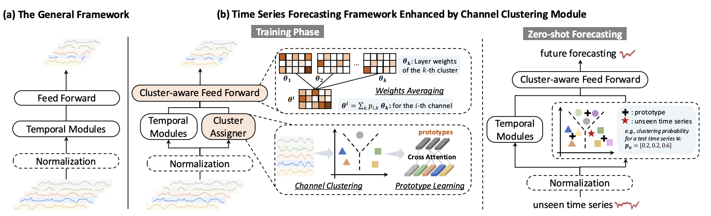
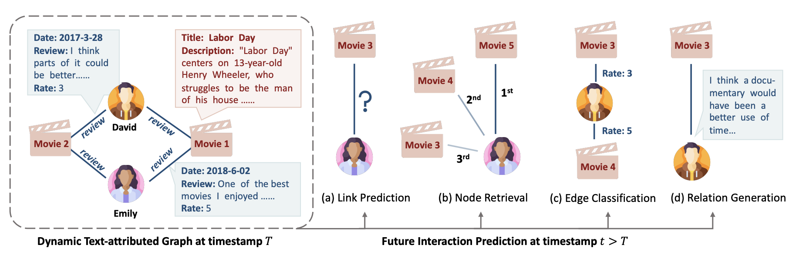
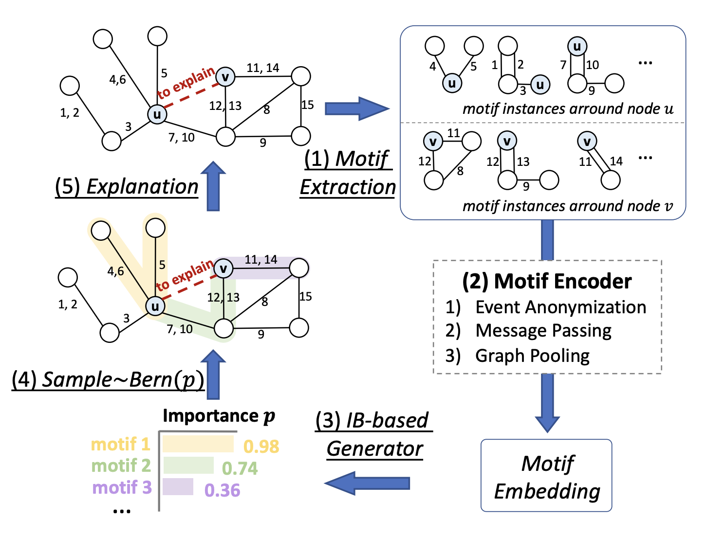

|
I am a computer science Ph.D. student at Yale University advised by Professor Rex Ying.
Before that, I obtained my B.S. degree at Shanghai Jiao Tong University (SJTU) in 2022. I majored in mathematics and applied mathematics (Zhiyuan Honors Program).
I am generally interested in Large Language Models (LLMs) and Graph Foundation Models (GFMs), including:
- Developing large-scale foundation models tailored for diverse graph-structured data
- Designing efficient graph-aware Retireval Augmented Generation (RAG) to enhance LLM reasoning abilities
- Applying advanced graph models to real-world applications, such as retail product networks and recommendation systems
- Advancing LLM capabilities in temporal reasoning and time series forecasting
- Improving AI models in terms of trustworthiness, transparency, and reliability
If you share similar interests or work in related areas, feel free to reach out. I am always open to collaboration!
Email /
LinkedIn /
Github /
Google Scholar
|

|
Selected Publications
(* denotes equal contribution)
|
|
|
GFSE: A Foundational Model For Graph Structural Encoding
Jialin Chen, Haolan Zuo, Haoyu Peter Wang, Siqi Miao, Pan Li, Rex Ying
 /

|
|
|
LitFM: A Retrieval Augmented Structure-aware Foundation Model For Citation Graphs
Jiasheng Zhang, Jialin Chen, Ali Maatouk, Ngoc Bui, Qianqian Xie, Leandros Tassiulas, Jie Shao, Hua Xu, Rex Ying
/
|
|

|
From Similarity to Superiority: Channel Clustering for Time Series Forecasting
Jialin Chen, Jan Eric Lenssen, Aosong Feng, Weihua Hu, Matthias Fey, Leandros Tassiulas, Jure Leskovec, Rex Ying
/
|
|

|
DTGB: A Comprehensive Benchmark for Dynamic Text-Attributed Graphsy
Jiasheng Zhang, Jialin Chen, Menglin Yang, Aosong Feng, Shuang Liang, Jie Shao, Rex Ying
/
|
|

|
TempME: Towards the Explainability of Temporal Graph Neural Networks via Motif Discovery
Jialin Chen, Rex Ying
/
|

|
D4Explainer: In-distribution Explanations of Graph Neural Network via Discrete Denoising Diffusion
Jialin Chen, Shirley Wu, Abhijit Gupta, Rex Ying
/
|

|
Modeling Hierarchical Reasoning Chains by Linking Discourse Units and Key Phrases for Reading Comprehension
Jialin Chen, Zhuosheng Zhang, Hai Zhao
/
|

|
Generative Explanations for Graph Neural Network: Methods and Evaluations
Jialin Chen, Kenza Amara, Junchi Yu, Rex Ying
IEEE Data Engineering Bulletin, 2023
/
|
Experience
Applied Scientist Intern
Amazon Inc., 2024.05 - Now
Proposed a novel graph-aware retriever to enhance LLMs’ capabilities in question answering and complex reasoning on knowledge graphs;
Developed joint training of graph retriever and LLM reasoner in Graph RAG pipeline, improved the model's generalizability to open-domain scenario.
Machine Learning Intern
Kumo.AI Inc., 2023.05 - 2023.08
Worked on improving time series forecasting on retail tabular dataset;
Developed an autoregressive generative model for custom time series, contributing to feature development related to forecasting queries.
|
Teaching
- Teaching Assistant, 2023 Fall, Deep Learning on Graph-Structured Data (CPSC 483) Course Website
- Teaching Assistant, 2023 Spring, Trustworthy Deep Learning (CPSC 680) Course Website
|
Academic Services
- Conference Reviewer: NeurIPS, ICML, ICLR, KDD, AAAI, LoG
- Journal Reviewer: IEEE Transactions on Artificial Intelligence, Journal of Biomedical Informatics
|
|